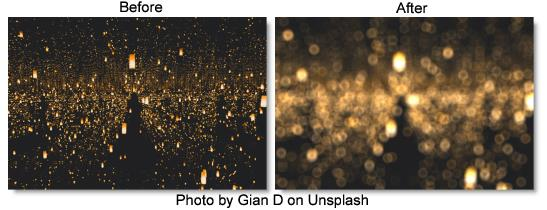

S_RackDefocus
Description
Generates a defocused version of the image using a 'circle of confusion' convolution. This effect is often preferable to a gaussian blur for simulating a real defocused camera lens, because bright spots can be defocused into clean shapes instead of being smoothed away.
The S_RackDefocus filter comes from the Emmy award winning Boris FX Sapphire filter set.
Category
Diffusion/Blurs.
Controls
Presets
To select a preset, pick one from the Presets window.
Defocus Width
The width of the defocus.
Rel Height
The relative height of the iris shape. If it is not 1, circles become ellipses, etc.
Lens
Shape
Determines the shape of the simulated camera iris.
Circle
Round.
3 - 12 sides
3 to 12 sided shapes.
Show Shape
Show the iris shape instead of the defocused image.
Roundness
Modifies the shape of the simulated camera iris. A value of 1 produces a circle while 0 produces a flat−sided polygon with a number of sides defined by the Shape parameter. Less than 0 causes the sides to squeeze inward creating a star shape, while a value greater than 1 causes the corners to squeeze inward, generating a flowery shape. Roundness has no effect if Shape is set to Circle.
Rotate
Rotates the iris shape.
Bokeh
Softens the outer edge of the iris shape, which creates a softer look to the defocused highlights. A negative value darkens the center of the iris shape, producing a ring−like defocus shape.
Lens Noise
Increase to add noise to the iris shape, dirtying up the defocus. Can make the result more realistic. Turn up past 1 for a more stylistic result.
Noise Freq
The frequency of the added noise. Ignored if Lens Noise is zero.
Noise Freq Rel X
The relative horizontal frequency of the added iris noise. Increase to stretch it vertically or decrease to stretch it horizontally.
Noise Seed
The seed value for the added noise.
Gauss Blur
If positive, a gaussian blur is applied which smooths out the edges of the shapes. This might also darken the highlights because Gamma is not considered in the gaussian blur.
Use Gamma
Values above 1 cause highlights in the image to retain their brightness after the defocus is applied.
Boost Highlights.
The amount to increase the luma of the highlights in the image. Increase this parameter to blow out the highlights without affecting the darks or midtones.
Hilight Threshold
The minimum luma value for highlights. Pixels brighter than this will be brightened according to the Boost Highlights parameter.
Chroma Distort
Adds some chromatic aberration around the edges of the image. Red and blue wavelengths of light refract differently in real lenses, producing fringes of color where the rays strike the lens at oblique angles.
Color Fringing
Color Fringing produces rings of color around every object in the image by varying the focal distance for each color channel. It generates a different style of chromatic aberration from Chroma Distort because it's not just in the image corners.
Brightness
Scales the brightness of the result.
Offset Darks
Adds a gray value to the darker regions of the result. This can be negative to increase contrast.
Mix With Source
Interpolates between the defocused result and the original image.
Edge Mode
Determines the behavior when accessing areas outside the image.
Transparent
Areas outside the image are treated as transparent, which can produce transparency around the edges. Select this option for fastest rendering.
Repeat
Repeats the last pixel outside the border of the image.
Reflect
Reflects the image outside the border.
Soft Borders
If enabled, transparent borders are added to the image before processing. This allows the result to include soft edges beyond the original image size. When off, the effect only occurs within the frame and the result will retain an edge at the borders.
Show Defocus Width
Enables/disables the on-screen control for adjusting the Defocus Width parameter.